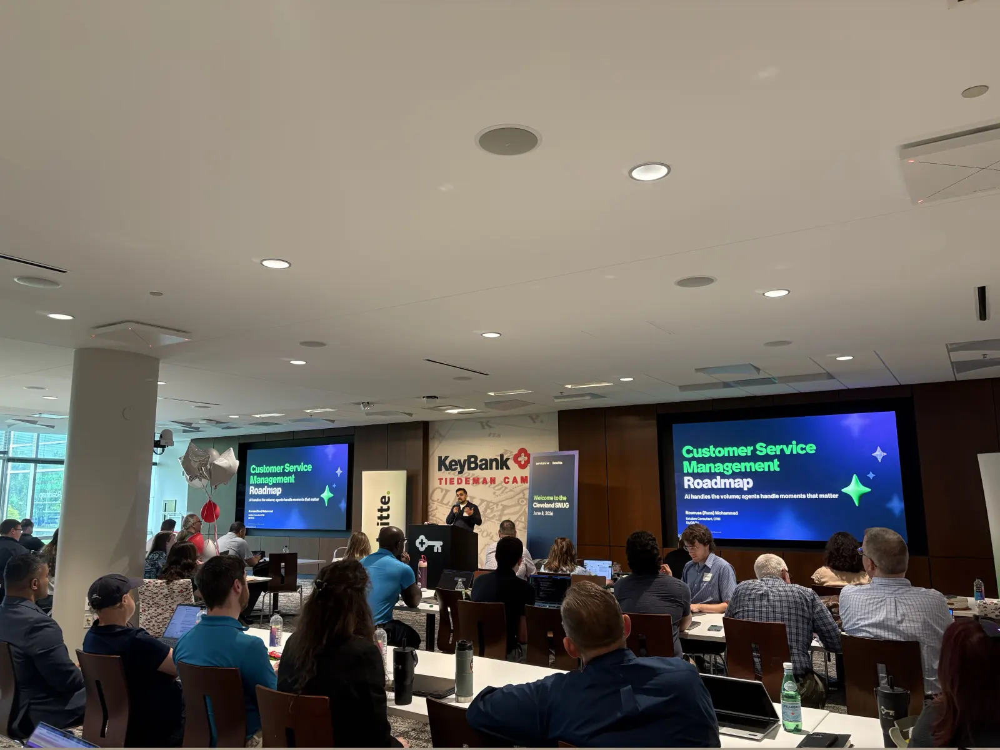

01 · Learn the workflow
Stay curious until the real problem is clear.
Listen to executives, technical teams, and the people doing the work until we can name where it breaks down, what has to change, and what a useful outcome looks like.
Russ Mohammad · Lead / Principal SE candidate
Enterprise Life Sciences · Solution Engineering
I get close to how customers work, then build POCs, workflow environments, and supporting material that help people see what the solution can do in their world.

Relevant proof
A résumé tells you what I have done. This is the evidence for how I think, build, and lead when the work gets hard.
Search a theme to find the work behind the claim.
How I show up
I am curious about both sides of the problem: what is making the customer’s work hard today, and what can the technology actually do about it. From there, I build a tailored solution around the workflow and stay close enough to make it useful.
01 · Learn the workflow
Listen to executives, technical teams, and the people doing the work until we can name where it breaks down, what has to change, and what a useful outcome looks like.
02 · Build the right thing
Build POCs, workflow environments, realistic scenarios, and supporting assets around the work that matters. The goal is not a showpiece; it is something customers can challenge and use.
03 · Make it useful again
Turn what I learn into reusable demo environments, enablement sessions, field assets, and sharper judgment so the next customer conversation starts further ahead.
Current scope
That is the work I enjoy: staying curious about the customer’s problem, building something useful, and helping the team make it better.
What I would bring to Salesforce
Get close to the workflow and build something customers can use to decide what comes next.
02Make the team sharperTurn the learning from hard work into coaching, reusable assets, and better judgment.
03Bring real HCLS contextPair a clinical-medicine foundation with enterprise presales craft and a bias for building.
From discovery to durable decision
Study the work before deciding what to build. Then choose the use case, make it tangible, plan for adoption, and leave the next team with a better starting point.
01 / 05
Spend time with the people, handoffs, decisions, exceptions, and constraints that define the work. The goal is a shared understanding of what is actually hard.
Background

Enterprise solution consulting · HCLS
2026 — Present
Manager’s leadership partner for an 8-person Regulated Industries team—staying close to strategic accounts while coaching SCs, supporting interviews, providing coverage, guiding hard deals, and leading enablement.
Enterprise solution consulting · HCLS
2025 — 2026
Built tailored solutions for complex HCLS customer workflows across the CRM suite—connecting discovery to the right POC, workflow environment, technical plan, and solution strategy.

Life-sciences software
2023 — 2025
Led the technical motion for strategic life-sciences accounts while mentoring solution consultants and account executives through complex evaluations.

CPG solution engineering
2021 — 2023
Spent a chapter in CPG, learning the craft of translating business and IT needs into working sessions and reusable technical assets before finding my way back to HCLS.

Clinical medicine · Epic workflows
2016 — 2021
Started in clinical medicine, working with clinicians and IT on Epic workflows, reporting, and process improvements that increased adoption by 25%.
Selected work
These examples show the range I would bring to Salesforce: get close to the work, build a tailored solution, and make the technical call that helps the customer move forward.
F100 life sciences company · Competitive POC
For an F100 life sciences company, I built a tailored order-orchestration environment across provider intake, order work, lab scenarios, and visibility.
I brought together 38 named testers and 20+ SCs to pressure-test the POC before the customer session, then used the learning to strengthen the workflow and the customer experience.
Outcome Selected as vendor of choice in a 15+ vendor field that included Salesforce and Microsoft.
National contract research organization · Workflow reset
When a national contract research organization leaned toward a point solution, I restarted with deeper discovery and modeled the actual workflow—not a feature checklist.
Built a tailored environment with 150 patient records, 400 cases, and 600 interactions to show how intake, casework, knowledge, AI-guided analysis, and mobile teams could work together at scale.
Move Replaced a generic product story with a tailored solution buyers could recognize as their own.
Global medtech manufacturer · Solution judgment
A partner had recommended a more custom path. I validated the available capability with product experts and helped the customer see a simpler, stronger answer.
The recommendation used purpose-built functionality for the 8D process, removing roadmap dependence and unnecessary supplier-portal complexity.
Principle Good technical judgment helps customers spend effort where it matters.
Leadership
I lead as a player-coach: stay in the work, make the quality bar visible, and turn the strongest moments into capability other people can use.
01
As the manager’s leadership partner for an 8-person Regulated Industries team, I step into strategic deals, interviews, coaching, coverage, and enablement while keeping the team’s judgment and momentum moving.
02
I built a custom Claude demo builder and executive microsite skill, then turned successful work into reusable demo environments, lab guides, testing plans, and enablement sessions.
03
For a critical POC, I brought together 20+ SCs to pressure-test the workflow and anticipate customer questions. Co-leading HCLS Unlocked for 58 Core SCs extended that hands-on learning across the field.
In the field
Whether it is a working session or a keynote, I care about making a complex workflow clear enough for people to ask sharper questions and decide what to do next.
How I build the team
On the stage
The same curiosity applies on stage: understand the audience, make the work feel familiar, and give people a useful way to think about what comes next.

Let’s talk